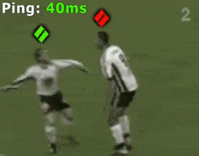
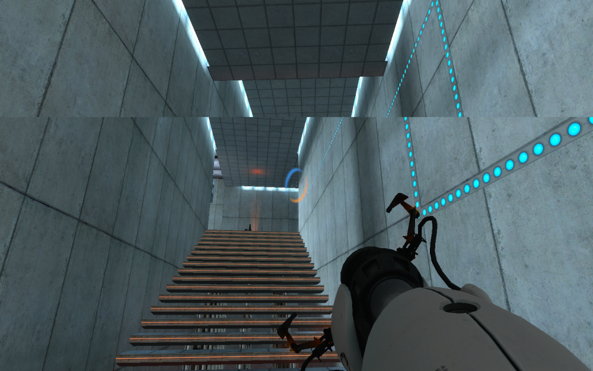

Para que a experiência do usuário seja proveitosa faz-se necessário um ping mínimo. Interagir com pessoas do outro lado do mundo seria algo frustrante, haveria um “delay” no áudio transmitido de um usuário para outro e se dados leves como o áudio já seria um problema, a situação piora ainda mais para movimentos.
Pensando agora na infraestrutura temos um outro problema, imagine o seguinte: temos quase 8 bilhões de seres humanos no planeta, aproximadamente 4,7 bilhões possuem acesso à internet. O tráfego de banda para aplicações como essa, que necessitam de uma conexão contínua de qualidade e sem interrupções seria absurdamente alta, com isso temos 2 problemas principais: velocidade e infraestrutura.
No mundo real não existem variações na nossa visão, então o FPS (frames per second) e frequência dos dispositivos devem ser constantes, caso contrário pode-se ocorrer tontura e enjoo. É importante também impedir problemas como stuttering que seria quando um frame passa muito tempo na tela e se perde frames que deveriam aparecer logo após dele e falta de V-sync, que é quando um frame aparece com imagens diferentes de 2 quadros, criando uma linha horizontal.

Outro desafio é aprimorar o rastreio das mãos e olhos nos dispositivos, o mau funcionamento disso pode prejudicar muito a experiência.
Aprimorar o áudio é essencial para que o usuário se sinta o mais imerso possível num mundo virtual, é importante que ele consiga distinguir quando o som está vindo de cima, embaixo, direita, esquerda, frente e costas.
Sensores são importantes para registrar o movimento do usuário assim que uma ação for feita. A demora ou o mau funcionamento dos sensores pode impedir a interação com objetos no mundo virtual.
Qualidade gráfica é algo importante, mas esse aspecto só pode melhorar com o avanço tecnológico dos hardwares.
A ideia inicial de Zuckerberg é tornar o metaverso uma rede social, onde você terá uma IA que será sua assistente virtual visualmente parecida com um ser humano, e te auxiliará em qualquer coisa que você precisar, algo semelhante a Alexa da Amazon, Cortana da Microsoft, Google do google, Bixby da Samsung e Siri da Apple.